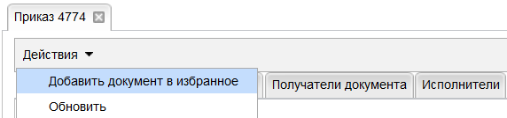
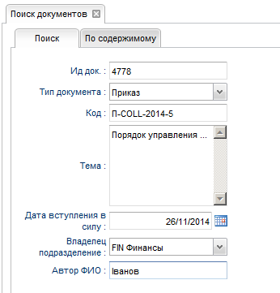

Приложение № 2
к уведомлению УВЕД-PMO-2015-__ от __.__.2015
ИНСТРУКЦИЯ ПОЛЬЗОВАТЕЛЕЙ
СИСТЕМЫ ЭЛЕКТРОННОГО ДОКУМЕНТООБОРОТА НОРМАТИВНЫХ ДОКУМЕНТОВ БАНКА
ОГЛАВЛЕНИЕ
|
1. |
стр.2 |
|
|
2. |
стр.3 |
|
|
3. |
стр.6 |
|
|
4. |
стр.12 |
|
|
5. |
стр.15 |
|
|
6. |
стр.16 |
ВНИМАНИЕ!
Всем сотрудникам предоставлен доступ в систему по умолчанию, создание документа доступно только сотрудникам ГБ (согласно П-ЦУП-2013-2 от 03.09.2013);
В системе доступно оформление только Порядков и Уведомлений; порядок согласования и подписания Приказов не изменился.
В базе данных системы доступны документы (приказы, порядки и уведомления) с 10.09.13 по 01.08.14.
Вход в систему осуществляется по ссылке https://doc.bnppua.net.intra через браузер Internet Explorer.
После запуска ссылки может появиться следующее сообщение:
Выберите:
Для входа в систему используйте логин и пароль для входа в учетную запись (как при первом входе в компьютер).
Внимание! При вводе неверного логина или пароля 3 раза, учетная запись будет блокирована (вход в компьютер).
Далее вы автоматически переходите на стартовую страницу:
Обратите внимание, что на панели управления должно отобразиться ваше имя, которое является подтверждением корректного входа в систему!
Тайм-аут системы: если не пользоваться системой 15 минут, система возвращает пользователя к повторному вводу пароля!
Страница HOME содержит следующую информацию:
Д
окументы,
ВСТУПИВШИЕ В СИЛУ:
Документы ВЫВЕДЕНЫ ИЗ ДЕЙСТВИЯ:
Меню «Документы → Документы дня» открывает отдельную закладку с документами вступившими в силу и выведенными из действия.
РАБОЧАЯ ОБЛАСТЬ ПОЛЬЗОВАТЕЛЯ:
К исполнению – документы попадают в данную область после публикации, если вы выбраны исполнителем в карточке документа. Исполнитель должен выполнить указанные в документе действия.
На согласование – документы попадают в данную область после выбора вас согласовантом в карточке документа и остаются до момента согласования документа всеми согласовантами.
На подписание – документы попадают в данную область после выбора вас подписантом в карточке документа (подписание на время пилота не доступно!).
Избранное – документы попадают в данную область после выбора в карточке документа, как избранное.
Созданные документы – созданные вами документы в разных статусах.
Меню «Документы → Мои документы» открывает отдельную закладку с рабочей областью пользователя системы.
Меню: «Документы → Все документы» открывает базу данных опубликованных документов.

Внимание!
Выберите период поиска документов. По умолчанию, текущий месяц.
В базе данных системы доступны документы с 10.09.13 по 01.08.14.
Внимание! СОЗДАНИЕ ДОКУМЕНТА доступно только сотрудникам Головного Банка.
Меню «Создать документ → Выберите тип документа»
Откроется карточка документа. Заполните обязательные поля в ПАРАМЕТРАХ ДОКУМЕНТА.

Добавьте документ в ИЗБРАННОЕ. В карточке документа выберите «Действие → Добавить документ в избранное».

Для ПОРЯДКОВ:
Внимание! Все обязательные поля должны быть заполнены. Для заполнения руководствуйтесь процедурой П-ЦУП-2013-2.
Выбор СОГЛАСОВАНТОВ. В закладке согласование нажмите «Добавить» .
Откроется окно со следующими параметрами выбора:
В
ведите
фамилию/имя на УКРАИНСКОМ
ЯЗЫКЕ, если вы выбрали «По ФИО».
Отметьте галочкой свой выбор.
Чтобы добавить сотрудника в Избранное, выберите в Меню «Справочники → Избранные сотрудники».
В закладке избранные сотрудники нажмите «Добавить» .
Выбор ПОЛУЧАТЕЛЕЙ. В закладке получатели документа нажмите «Добавить» .

Откроется окно со следующими параметрами выбора:
Внимание!:
Если документ НЕ КОНФЕДЕНЦИАЛЕН, выберите ВСЕ СОТРУДНИКИ БАНКА или если вы выбрали «НЕТ» в поле конфиденциальность, документ автоматически будет доступен всем сотрудникам Банка.
АВТОР ответственен за выбор ПОЛУЧАТЕЛЕЙ! Получатель – сотрудник, который должен ознакомиться с содержанием документа для выполнения своих должностных обязанностей.
Не выбирайте из разных параметров поиска (например, ИТ из «Направления» и ГБ из «Регионы»), таким выбором вы ограничиваете сотрудников, которые получат документ. Принадлежность сотрудникам к направлению, региону, области и т.п. зависит от информации в SAP.
Выбор ИСПОЛНИТЕЛЕЙ аналогичный. Внимание! Если сотрудник выбран исполнителем, документ отобразится у него в закладке «к исполнению». Исполнитель – сотрудник, который должен выполнить какие-либо действия, согласно содержанию документа.
Е
сли
ваш документ ОТМЕНЯЕТ/ИЗМЕНЯЕТ другой
документ, нажмите поле отменяет/изменяет
и найдите его в базе данных.
Добавьте ВЛОЖЕНИЕ.
Внимание! Размер вложения ограничен 5 МБ.
После заполнения всех полей карточки документа, загрузки вложений, выбора согласовантов, получателей и исполнителей – отправьте документ на согласование.
Появится окно для ввода краткого описания документа, которое будет доступно только СОГЛАСОВАНТАМ в электронном письме.
Если Вы выбраны в карточке документа СОГЛАСОВАНТОМ, в рабочей области отобразится документ для согласования, 2 кликами отроется карточка документа:
ИЛИ
Перейдите по ссылке в письме, которое будет автоматически направлено в Лотус:
----------------------------------------------------------------------------------------------------------------------------------------------------------
От: Documents management system <doc@bnppua.net.intra>
Кому: IVAN.IVANOV@UKRSIBBANK.COM,
Дата: 05.01.2015 11:14
Тема: Запрос на согласование – ИД документа: 4943
ЗАПРОС НА СОГЛАСОВАНИЕ. Ид документа: 4943
Крайний срок согласования: 08/01/2015
------------------------------------------------------------------------
Автор
ФИО: Петров
Петро Петрович
Тип документа:
Уведомление
Тема:
Уведомление о запуске в опытно-промышленную
эксплуатацию функциональности,
разработанной в рамках проекта
«2012_24_008: E-database & E-workflow for internal regulative
documents».
Краткое описание документа:
О внедрении в АО «УкрСиббанк»
электронных документов, электронного
документооборота и электронной цифровой
подписи в системе документооборота
Нормативных Документов Банка: приказов,
порядков и уведомлений, - в рамках
внедрения в опытно-промышленную
эксплуатацию проекта «2012_24_008: E-database &
E-workflow for internal regulative documents».
Ссылка
на документ:
https://doc.bnppua.net.intra/document.flow.ui/index.html
Крайний срок
согласования: 08/01/2015
_____________________________________________________________________
Данное
сообщение сгенерировано автоматически,
отвечать на него не нужно
----------------------------------------------------------------------------------------------------------------------------------------------------------
Откроется карточка документа. В карточке документа перейдите на закладку СОГЛАСОВАНИЕ.
Окно для согласования:

После того, как вы согласовали – НАЖМИТЕ СОХРАНИТЬ внизу карточки документа. Не нажимайте обновить , до момента сохранения!
Внимание! При выборе НЕТ одним из согласовантов, согласование останавливается до момента повторной отправки документа на согласование Автором. Документ переходит в статус ПРОЕКТ ДОКУМЕНТА. Документ не доступен СОГЛАСОВАНТАМ, только АВТОРУ.
Работа с ВЕРСИЯМИ ДОКУМЕНТА:
Открыть документ можно нажав «ЗАГРУЗИТЬ» или 2 кликами;
После этого документ выгружается на ваш локальный компьютер;
После того как вы внесли правки, загрузите новую версию документа нажав «НОВАЯ ВЕРСИЯ», при этом нужно выделить документ к которому вы загружаете новую версию.
Выберите документ на локальном компьютере.
Загрузите вложение.
Внимание! Каждый СОГЛАСОВАНТ должен работать с последней версией вложения документа!
После того, как вы согласовали и загрузили новую версию документа – НАЖМИТЕ СОХРАНИТЬ.
Внимание! АВТОР должен консолидировать все правки. Только последняя версия документа будет опубликована и введена в действие!
После того, как получены все согласования, документ автоматически отправляется Бизнес администратору для ПУБЛИКАЦИИ. АВТОР может получить правки от Бизнес Администратора на данном этапе.
Бизнес администратор подтверждает ПУБЛИКАЦИЮ и КОД и документ публикуется и доступен в ДОКУМЕНТАХ ДНЯ и ВСЕ ДОКУМЕНТЫ, как Действующий документ.
И на странице HOME в документах, ВСТУПИВШИХ В СИЛУ.
Вы можете отменить документ, согласно правил, описанных в пункте (если ваш документ ОТМЕНЯЕТ/ИЗМЕНЯЕТ другой документ).
Отозвать документ может только Бизнес администратор (отозванный документ – это отозванный Автором документ в силу изменившихся условий).
Ежедневно в 17.00 с адреса UKRAINE INTERNAL DOCUMENTS DESK будет приходить ссылка на стартовую страницу системы для ознакомления с документами, вступившими в силу.
Выберите в Меню → Поиск
Вы можете искать документ по одному или нескольким параметрам:
ИД документа
Тип документа
КОД
Тема
Да вступления в силу
Владелец подразделение
Автор ФИО
Внимание! Вы сможете найти в базе данных только документы, которые не конфиденциальны, или документы, где вы являетесь Автором, Получателем, Исполнителем, Согласовантом.

Вы можете искать документ по содержимому тексту в файле документа, введите фрагмент текста:
Нажмите искать: